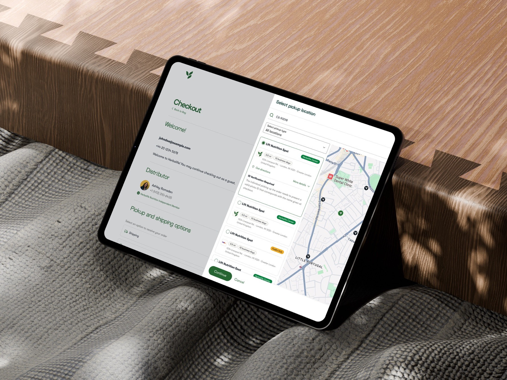
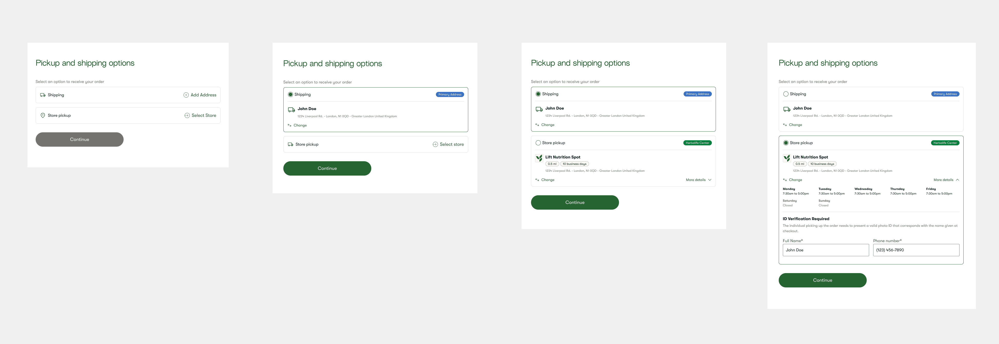
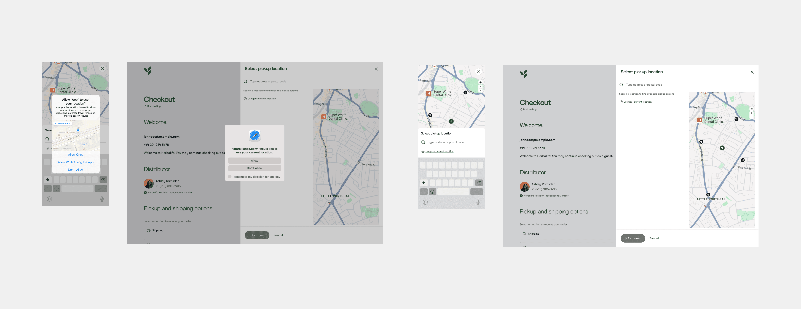
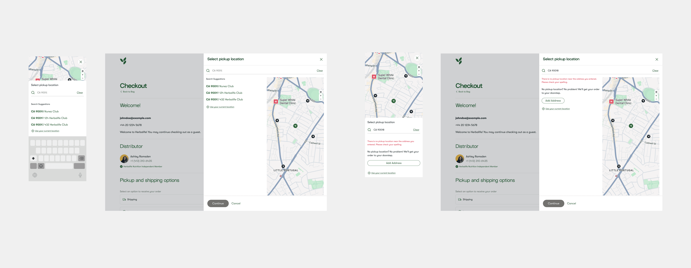
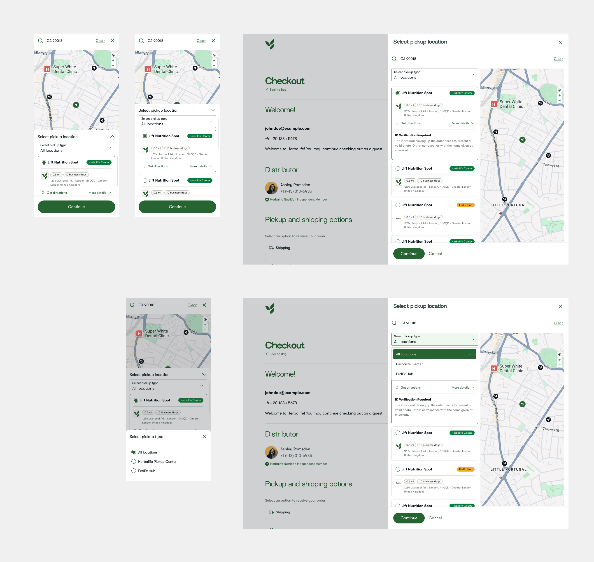
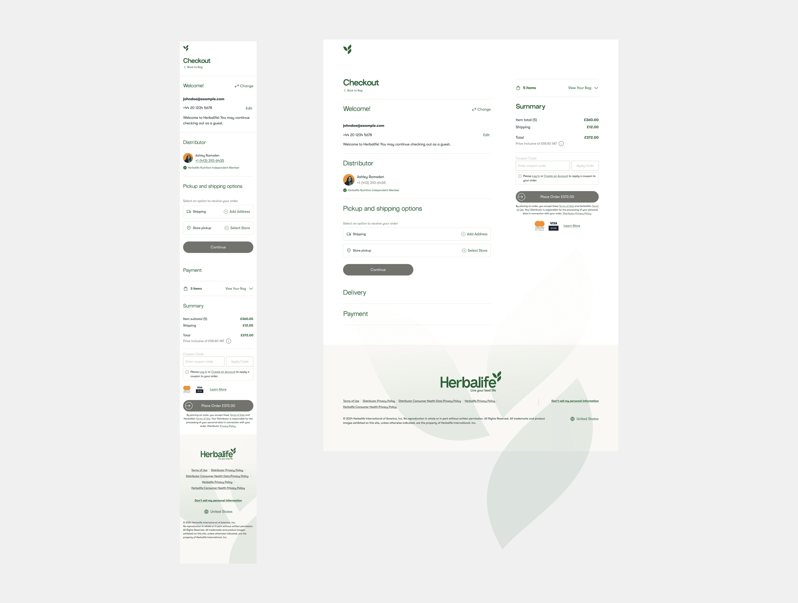
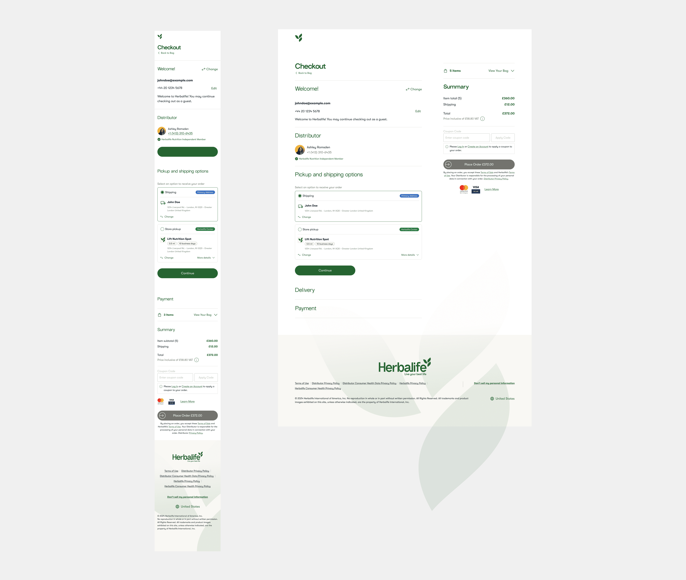

Adding delivery flexibility to the checkout experience

The Challenge
"How do we make self-collection feel like a first-class choice, not a workaround buried in the checkout flow?"
In India's fast-growing e-commerce market, delivery flexibility is becoming a key differentiator. While home delivery remains the default, customers in dense urban areas often prefer collecting orders from nearby pickup points to avoid missed deliveries, better fit their schedules, or reduce delivery fees. But the pickup option (PUDO) was hidden within secondary flows, resulting in low discoverability, high friction during address selection, and drop-offs caused by forced home delivery. The challenge was to integrate Pickup Location into the Address Step in a way that was intuitive for first-time users, fast for repeat buyers, consistent across guest and logged-in flows, and non-disruptive to checkout conversion.
What success needed to look like.
Make pickup as discoverable as home delivery. Reduce friction in address selection. Increase successful order completion for users preferring self-collection. Decrease failed delivery attempts in dense urban areas.
An equal choice, made early.
To make pickup visible from the start, we introduced a two-option toggle at the top of the Address Step: Ship to My Address, or Pick Up from a Nearby Location. Both options were given equal visual weight to encourage discovery. For first-time users, inline hints explain the benefits of pickup — faster availability, flexible hours — without breaking the checkout flow.

UX principle — early, explicit choice reduces cognitive load and prevents hidden features from being overlooked.
Built for speed and clarity.
Once pickup is selected, users are taken to a dedicated search interface where they can search by city, PIN code or full address — or grant location access for an instant, current-location search. Results are shown in both list and map views: list view supports quick scanning of distance, open/closed status and availability tags, while map view supports spatial decision-making in dense urban contexts. Selected locations are saved instantly and reflected in the Address Summary in real time, without extra confirmation screens.

UX principle — minimize steps between intent (choose pickup) and commitment (location selected).
Helpful even when there's no match.
Typing a PIN code surfaces matching pickup partners as live search suggestions, so users rarely need to scan a full list. And when no pickup location exists near an address, the flow doesn't dead-end — it offers a clear fallback to add a shipping address instead, keeping the order moving.

Progressive narrowing, not choice overload.
To help users reach a decision faster, we added contextual filters — distance range, open now, opening hours, and pickup partner type (Herbalife Center, FedEx Hub). Filters update results dynamically and sit at the top to reduce scanning effort, and the layout is scalable enough to absorb new filter types without a redesign.

UX principle — progressive narrowing reduces choice overload and speeds up decision-making.
Reversible by design.
Once selected, the pickup location stays persistently displayed in the Address Summary during checkout and in the Final Order Summary before payment — including store hours and the ID verification required to collect the order. Users can change their selection at any time without restarting the flow, which lowers anxiety and raises confidence to proceed.
Before — shipping and store pickup shown as collapsed options

After — store pickup selected, with hours and ID verification

UX principle — reversible choices reduce user anxiety and lower abandonment risk.
The redesigned Address Step transforms pickup from a hidden alternative into a primary delivery method — discoverable from the start, efficient to search and filter, and reversible at every step.


Let's build
something great.
danierocruz@gmail.com
Usually respond within 24h · Open to remote, B2B & SaaS projects.